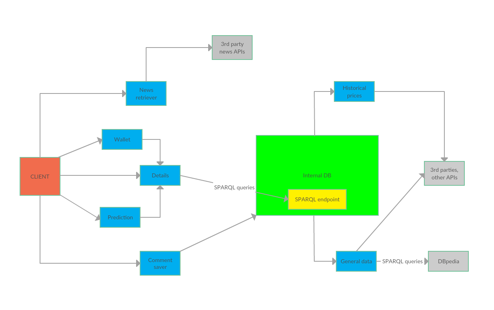

CryMa (Cryptocurrency Manager)
Abstract
CryMa (Cryptocurrency Manager) is a modular system capable of expressing and managing the knowledge about existing cryptocurrencies and their respective (meta-)data. The users can read the latest news about the first 100 most popular trending cryptocurrencies, perform various comparisons between them and can also construct a digital wallet where he can see his total money's worth in various real currencies from the world.
Introduction
CryMa (Cryptocurrency Manager) is a multi-device application which provides useful cryptocurrency-related information about the first 100 most popular trending cryptocurrencies. The CryMa's application base inputs are the knowledge base (DBpedia) and various third party APIs for the general cryptocurrency information, as well as for the top 100 historical cryptocurrency data.
Users are able to select multiple cryptocurrencies and perform various comparisons between them, such as seeing their evolution over a chosen period of time. For example, the period of time can be a day, a week, a month, a year and so on. In addition, the CryMa users can also select a specific cryptocurrency to find out more interesting details about it. At the same time, other users may comment on a specific cryptocurrency and share their thoughts about it, such as whether its value will go up or down or simply it's just not worth investing in it anymore.
Another functionality that the CryMa users have at their disposal is the construction of a digital wallet containing various cryptocurrencies. By performing this action, they can see how much real money they can make by selling their available cryptocurrencies at the current day's exchange rates.
Last but not least, in the details page for a specific cryptocurrency, users are presented with a pretty accurate prediction for it. The prediction is not 100% accurate, but should serve as a reasonable guideline for the user when it comes to buying or selling that particular cryptocurrency.
Application Architecture
The (micro)service-oriented architecture for the CryMa (Cryptocurrency Manager) application is described below.
The backend of the CryMa (Cryptocurrency Manager) application is composed of several microservices, each with a well-defined purpose. For example, the news retriever microservice is responsible only for fetching the latest trending news regarding the most popular cryptocurrencies of the day. Another microservice is the comment saver one, which is pretty self-explanatory. It does only this, it stores the users' comments.
Other microservices are the prediction, which decides whether the price of a specific cryptocurrency will go up or down, the wallet, which computes the actual value in a user-chosen real currency for the cryptocurrencies that he currently possesses. The historical prices microservice gets data related to the first 100 most popular cryptocurrencies up until the previous month by using 3rd party APIs and the details microservice uses data provided by the aforementioned microservice to display various interesting information regarding a particular cryptocurrency. This is the place where the comment saver microservice also comes into play.
The last microservice that the CryMa (Cryptocurrency Manager) uses is the general data one. This particular microservice is responsible for extracting general data about a given cryptocurrency, which means extract whatever data it can find about it except for its historical values. This microservice performs SPARQL queries and also uses several third party APIs in order to collect the required information.
The CryMa (Cryptocurrency Manager) application is written in Java and uses the Apache Jena framework for performing the SPARQL queries and also Fuseki for exposing its own triples as an accessible SPARQL endpoint. CryMa also uses the Ontology API from Apache Jena for building its own augmented cryptocurrency ontology.
The OpenAPI specification for the CryMa (Cryptocurrency Manager) application can be found by clicking here .
Main flow
The CryMa (Cryptocurrency Manager) application's main flow is shown in the picture below. The interaction between the end user and the API provided by the application is highlighted in the diagram. 
To begin with, the end user will first make a call to the /details endpoint which will display various information about the most popular cryptocurrency of the day.
Next, the user may choose to see some predictions about it or about another chosen cryptocurrency.
Also, the user can call the /wallet endpoint from where he can see how much money he can make by selling his available cryptocurrencies at the current day's exchange rates.
In the details page, the user can read various comments from other users of the CryMa (Cryptocurrency Manager) application about a particular cryptocurrency.
By making a call to the /news endpoint, the end user is presented with the latest trending news about the first 100 most popular cryptocurrencies.
The /prediction endpoint provides a fairly accurate prediction to the user about a particular cryptocurrency and some tips about its possbile evolution, such as whether the price will go up or down or it's just not worth investing into it any longer.
Conclusion
CryMa (Cryptocurrency Manager) might prove to be quite a dependable cryptocurrency application when it comes to deciding whether to buy or to sell available cryptocurrencies. Even though the information which can be found on DBpedia and other websites can suffice as far as managing one's cryptocurrencies goes, it is not tailored to satisfy everyone's needs. CryMa also provides various details about a specific cryptocurrency and also some fairly reliable predictions about it. The CryMa (Cryptocurrency Manager) cryptocurrency application can be further improved by integrating it not only with the Facebook social network, but with others as well, such as Google+, Twitter and so on. Thus, the quality of the provided custom-tailored cryptocurrency tips can be easily improved by simply enlarging the application's data sets because more and more people will comment about popular cryptocurrencies and therefore the application can make better predictions which end users can benefit from.